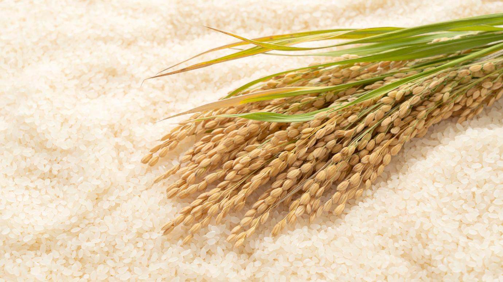
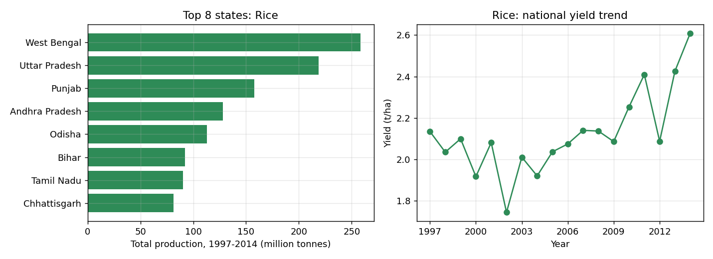

Rice is the seed of the grass species Oryza sativa (Asian rice) or less commonly O. glaberrima (African rice). The name wild rice is usually used for species of the genera Zizania and Porteresia, both wild and domesticated, although the term may also be used for primitive or uncultivated varieties of Oryza. As a cereal grain, domesticated rice is the most widely consumed staple food for over half of the world's human population,[Liu 1] particularly in Asia and Africa. It is the agricultural commodity with the third-highest worldwide production, after sugarcane and maize.[1] Since sizable portions of sugarcane and maize crops are used for purposes other than human consumption, rice is the most important food crop with regard to human nutrition and caloric intake, providing more than one-fifth of the calories consumed worldwide by humans.[2] There are many varieties of rice and culinary preferences tend to vary regionally. Annual per capita supply (2019) Small wind-pollinated flowers The traditional method for cultivating rice is flooding the fields while, or after, setting the young seedlings. This simple method requires sound irrigation planning, but reduces the growth of less robust weed and pest plants that have no submerged growth state, and deters vermin. While flooding is not mandatory for the cultivation of rice, all other methods of irrigation require higher effort in weed and pest control during growth periods and a different approach for fertilizing the soil.

States with more than 100,000 ha in total

Source: district-wise crop production data (data.gov.in via Kaggle), cleaned and analysed with SQL and Python.
Average of the 100 rice records in the crop recommendation dataset:
| N | P | K | Temperature | Humidity | Soil pH | Rainfall |
|---|---|---|---|---|---|---|
| 80 | 48 | 40 | 23.7 °C | 82% | 6.4 | 236 mm |
Rice needs a lot of water: its average rainfall value is the highest of all 22 crops in the dataset. Try your own values in the live app.